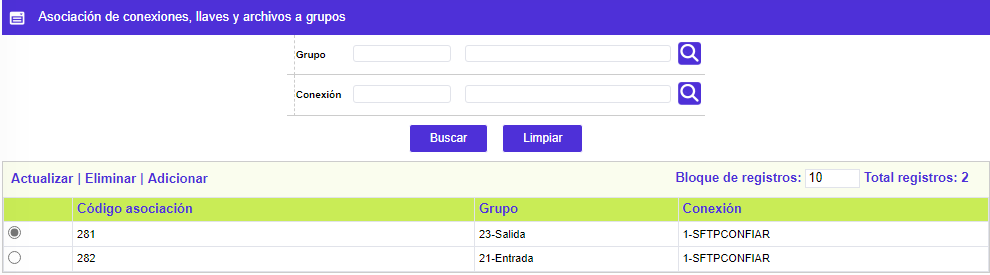
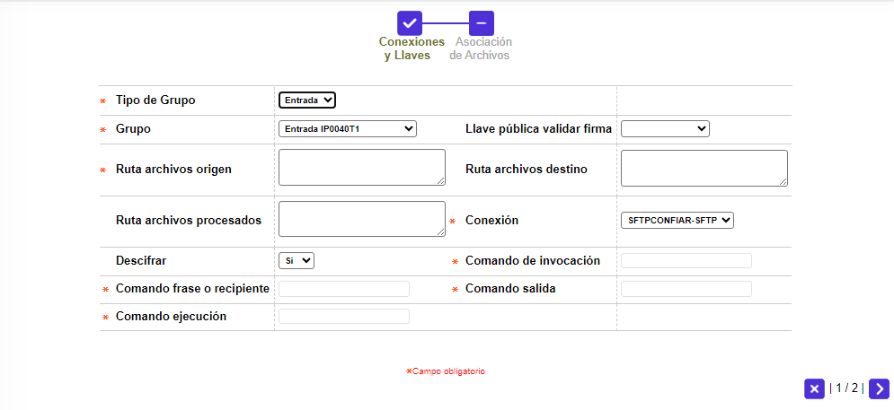
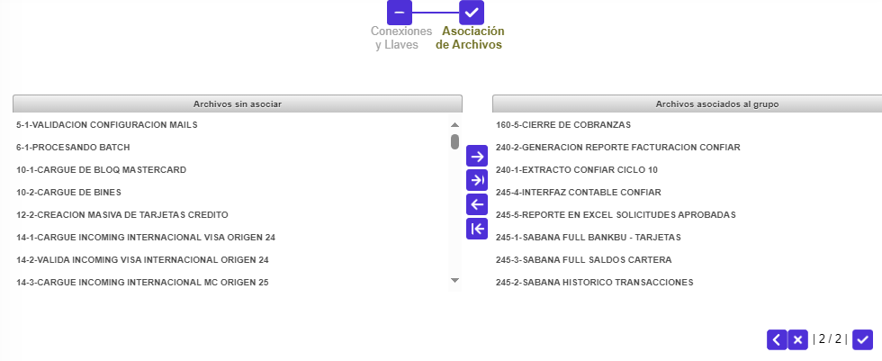

Asociación a conexiones, llaves y archivos a grupos
En éste formulario confluyen varios de los parámetros definidos por la entidad en las demás opciones que componen éste submódulo. Permite vincular: Parámetros Grupos Entrada Salida, Parámetros Llaves de cifrado PGP, Parámetros conexión al servidor y Definición grupos de procesos, lo que al final se obtiene es que al ejecutarse uno de los procesos matriculados en ésta última opción, si éste requiere un archivo de entrada, debe tomarlo del servidor origen, copiarlo en la carpeta de entradas del aplicativo e iniciar la actividad que le corresponda a dicho proceso, mientras que si se trata de un proceso que deba generar un o más archivos de salida, debe surtir el proceso inverso, ésto es, copiarlo en la carpeta salidas del aplicativo y, finalmente ubicarlo en el servidor destino, utilizando el correspondiente protocolo de transmisión FTP o SSH, en claro o cifrado.
El formulario contiene los enlaces Actualizar , Eliminar y Adicionar.

Al activar el enlace Adicionar, el sistema despliega el paso Conexiones y Llaves del Wizard de dos momentos:

Descripción de campos
Tipo de Grupo |
Campo obligatorio que posee lista de valores tipo combo, con los valores Entrada o Salida de la que la entidad debe seleccionar, para el grupo a asociar, a cual de ellas corresponde. |
Grupo |
Campo obligatorio que posee lista de valores tipo combo, la cual se actualiza de forma dinámica dependiendo de lo seleccionado en el campo Tipo de Grupo con los valores poblados en el formulario Parámetros Grupos Entrada y Salida. |
Llave pública validar firma |
Campo obligatorio que posee lista de valores tipo combo, con los valores poblados en el formulario Parámetros Llaves de cifrado PGP debe haber coherencia entre el tipo de grupo y la llave pública a utilizar, esto es, si se trata de un grupo de salida que requiera encripción se debe asociar la llave pública para tal fin. |
Ruta archivos de entrada |
Campo alfanumérico de 250 posiciones, cuya obligatoriedad, depende de que el valor del campo Tipo de Grupo corresponda a Entrada, de aplicar, debe contener la ruta completa, del Servidor origen, en la que se deben ubicar los archivos de entrada. |
Ruta archivos de salida |
Campo alfanumérico de 250 posiciones, cuya obligatoriedad, depende de que el valor del campo Tipo de Grupo corresponda a Salida, de aplicar, debe contener la ruta completa, del Servidor de destino, en la que se deben ubicar los archivos de salida. |
Ruta archivos procesados |
Campo alfanumérico de 250 posiciones, no obligatorio, para uso futuro, solo se despliega cuando el tipo de grupo corresponde a Entrada, en el que quedan almacenados los archivos iniciales tomados del Servidor de origen. |
Conexión |
Campo obligatorio que posee lista de valores tipo combo, con los valores poblados en el formulario Parámetros conexión al servidor, a través del cual se determina el protocolo de transmisión a ser utilizado. |
Cifrar / Descifrar |
Campo obligatorio que posee lista de valores tipo combo con los valores Si y No, se activa Cifrar cuando se trata de archivos de Salida y Descifrar para cuando se habla de archivos de Entrada. |
Comando de invocación |
Campo alfanumérico de 20 posiciones, cuya obligatoriedad, depende de que el valor del campo Cifrar / Descifrar corresponda a Si, en cuyo caso debe contener el comando del sistema operativo de invocación gpg (incluye un espacio a la derecha), para cuando se trata de un archivo de salida o el comando gpg --batch --no-tty --yes (incluye un espacio a la derecha), para cuando se trata de un archivo de entrada. |
Comando frase o recipiente |
Campo alfanumérico de 50 posiciones, cuya obligatoriedad, depende de que el valor del campo Cifrar / Descifrar corresponda a Si, en cuyo caso debe contener el comando del sistema operativo de la clave --recipient para cuando se trata de un archivo de salida o el comando --passphrase, para cuando se trata de un archivo de entrada. |
Comando salida |
Campo alfanumérico de 20 posiciones, cuya obligatoriedad, depende de que el valor del campo Cifrar / Descifrar corresponda a Si, en cuyo caso debe contener el comando del sistema operativo de salida --output, indistintamente que se trate de un archivo de entrada o de salida. |
Comando ejecución |
Campo alfanumérico de 20 posiciones, cuya obligatoriedad, depende de que el valor del campoCifrar / Descifrar corresponda a Si, en cuyo caso debe contener el comando del sistema operativo de ejecución --encrypt para cuando se trata de un archivo de salida o el comando --decrypt, para cuando se trata de un archivo de entrada. |
En el segundo momento o paso del Wizard, Asociación de Archivos, de la Adición, se despliega el siguiente formulario:

Descripción de campos
Archivos sin asociar |
Campo que posee lista de valores tipo combo, que contiene la relación de los diferentes procesos u objetos lógicos parametrizados en el formulario Definición grupos de procesos, en Núcleo / Procesos, que se actualiza dinámicamente excluyendo aquellos procesos que fueron asociados a otras combinaciones de conexión / llave / archivos, en éste mismo formulario y, de la cual se deben seleccionar todos aquellos procesos para los que coincidan las siguientes dos condiciones: primera, ser de salida o de entrada y, segunda, transferirse en claro o cifrados.La relación muestra: Descripción del objeto lógico, Secuencia dentro del Grupo y Nombre del Objeto lógico. |
Archivos asociados al Grupo |
Campo que inicialmente aparece en blanco y el cual, mediante los botones especiales ubicados entre ambos campos, permite mover uno o todos los registros de un campo hacia el otro, teniendo presente la pauta según la cual, todos los procesos aquí relacionados deben cumplir las dos condiciones indicadas en el campo Archivos sin asociar, para guardar dicha configuración basta con activar el botón especial de la bandera ubicado en la parte inferior derecha. |
Actualizar: Si el usuario selecciona un registro e invoca la opciónActualizarse despliega el paso Conexiones y Llaves del Wizard de dos momentos, en los cuales todos los campos son modificables.